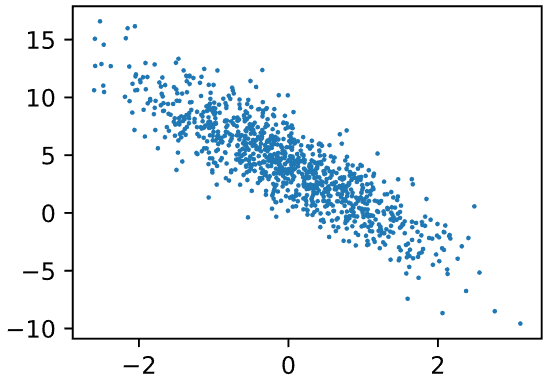

:::info
复习深度学习必要的理论，可参考该复习线路。该文内容学自李沐动手学深度学习，更基础详尽的理论可以学习吴恩达深度学习。
:::
[数学基础与数据操作基础]{.rainbow}
深度学习需要一点点线代基础和高数基础，Pytorch操作基础则相较需要更多一些，这部分可以跟下面的视频过一遍：
+++info Summary
学习视频链接：
线性代数：https://www.bilibili.com/video/BV1eK4y1U7Qy?spm_id_from=333.788.videopod.episodes&vd_source=3d14560c28f90efdd1f3e6caf7bf4277&p=2
数据操作：https://www.bilibili.com/video/BV1CV411Y7i4/?spm_id_from=333.1387.collection.video_card.click&vd_source=3d14560c28f90efdd1f3e6caf7bf4277
矩阵计算：https://www.bilibili.com/video/BV1eZ4y1w7PY/?spm_id_from=333.1387.collection.video_card.click
自动求导：https://www.bilibili.com/video/BV1KA411N7Px/?spm_id_from=333.1387.collection.video_card.click
+++
这里是深度学习需要的基础数学知识和数据操作，专门的线代复习和高数复习不在本文考虑范围内。
线性回归{.rainbow}
:::info Summary
学习视频链接：https://www.bilibili.com/video/BV1PX4y1g7KC/?spm_id_from=333.1387.collection.video_card.click&vd_source=3d14560c28f90efdd1f3e6caf7bf4277
:::
- 线性回归是对n维输入的加权，外加偏差，通常用于预测，方程形式：
通常使用
MSE损失去衡量预测的精确性，即预测值$\hat{y}$和真实值y的均方差：线性回归一般有显式解，显式解是损失导数为0的点。
- 线性回归可以看做是单层神经网络，$w_i$实际上是唯一的一层神经元的权重。
pytorch实现线性回归很简单。线性回归可以被看成是一层神经网络，因此可以用全连接层实现：
net = nn.Linear(2, 1)
Linear第一个参数是输入数据形状的最后一个维度，比如输入数据features.shape是[4,2]，那么Linear第一个参数就是2。通常输入数据的最后一个维度是数据的特征，2代表输入数据有两个维度的特征，如买房数据有房价和占地面积两个维度的特征。第二个参数就是输出数据形状的最后一个维度。
基础优化算法概览{.rainbow}
:::info Summary
学习视频链接：https://www.bilibili.com/video/BV1PX4y1g7KC?spm_id_from=333.788.videopod.episodes&vd_source=3d14560c28f90efdd1f3e6caf7bf4277&p=2
:::
梯度下降
基本思想是，对一组初始化的参数，反复迭代训练，按照下面的公式进行参数更新，使得最小化损失函数：
$\alpha$是学习率。学习率是一个很重要的超参，设置太大会导致模型无法收敛，设置太小会导致收敛过慢。
小批量梯度下降
在整个训练集上进行求梯度、求导会很慢。我们可以随机采样b个样本，计算损失来近似整个训练集上的损失。这个b就是batch_size（批量大小），不能设置太大，太大导致内存占用过高，设置太小又无法充分发挥硬件潜力。
基本深度学习训练流程{.rainbow}
以线性回归为例，假设我们要建立一个这样的模型：
事先导入需要用的包：
import numpy as np
import torch
from torch.utils import data
from d2l import torch as d2l
人工生成数据：
def synthetic_data(w, b, num_examples):
"""生成y=Xw+b+噪声"""
X = torch.normal(0, 1, (num_examples, len(w)))
y = torch.matmul(X, w) + b
y += torch.normal(0, 0.01, y.shape)
return X, y.reshape((-1, 1))
true_w = torch.tensor([2, -3.4])
true_b = 4.2
features, labels = synthetic_data(true_w, true_b, 1000) # 生成1k个样本。
数据案例：
print('features:', features[0],'\nlabel:', labels[0])
# 返回
# features: tensor([-0.3679, -1.8471])
# label: tensor([9.7361])
features是样本的特征，本质是一个二维数组，长度为1000，而label是样本的预测真实值。这里每个样本有两个特征，对每个特征单独分析，都会发现其与label存在线性关系：

读取数据集的函数，返回一个dataloader：
def load_array(data_arrays, batch_size, is_train=True):
"""构造一个PyTorch数据迭代器"""
dataset = data.TensorDataset(*data_arrays)
return data.DataLoader(dataset, batch_size, shuffle=is_train)
数据情况示例：
batch_size = 10
data_iter = load_array((features, labels), batch_size)
next(iter(data_iter))
# 结果分别是features和labels：
# [tensor([[ 0.1554, -0.2034],
# [-0.2140, 1.0352],
# [-0.4209, 0.0428],
# [ 0.1887, 0.6141],
# [ 0.4987, -0.2314],
# [ 0.0653, 1.6406],
# [-1.1881, 0.2900],
# [-0.2824, 0.5910],
# [ 0.9963, -0.1816],
# [-1.6830, -1.3963]]),
# tensor([[ 5.2116],
# [ 0.2479],
# [ 3.2188],
# [ 2.4845],
# [ 5.9884],
# [-1.2453],
# [ 0.8441],
# [ 1.6217],
# [ 6.8072],
# [ 5.5692]])]
我们的目的就是使用这1000个样本，训练出一个线性回归模型，也就是求出w和b，以最大化预测的精度，即给定一个样本特征，能够尽可能估计出其对应label的值。
初始化线性回归模型的参数，然后在训练过程中，这些参数会被学习、调整。定义模型和损失函数，并初始化模型参数：
# nn是神经网络的缩写
from torch import nn
net = nn.Sequential(nn.Linear(2, 1))
loss = nn.MSELoss()
net[0].weight.data.normal_(0, 0.01)
net[0].bias.data.fill_(0)
正如前面所说的，对整个数据集进行梯度求导会相当费时，所以通常采用小批量梯度下降——SGD。
trainer = torch.optim.SGD(net.parameters(), lr=0.03)
这样就可以开始训练了：
num_epochs = 3
for epoch in range(num_epochs):
for X, y in data_iter:
l = loss(net(X) ,y)
trainer.zero_grad()
l.backward()
trainer.step()
l = loss(net(features), labels)
print(f'epoch {epoch + 1}, loss {l:f}')
# 训练过程举例：
# epoch 1, loss 0.043705
# epoch 2, loss 0.000172
# epoch 3, loss 0.000047